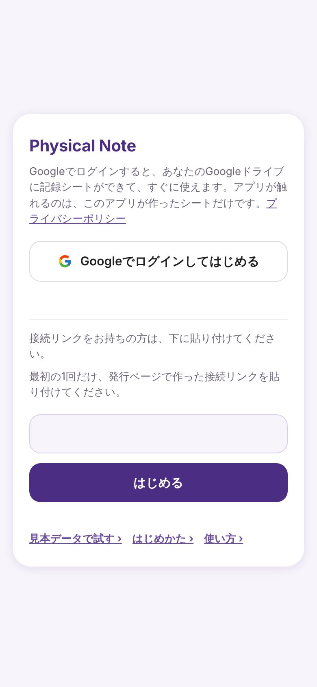
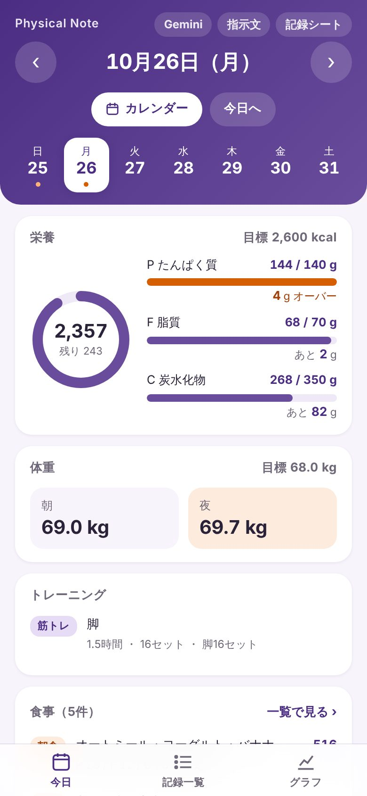
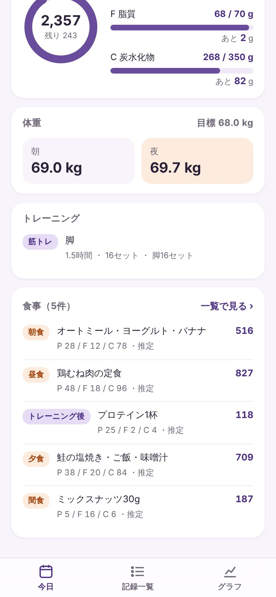
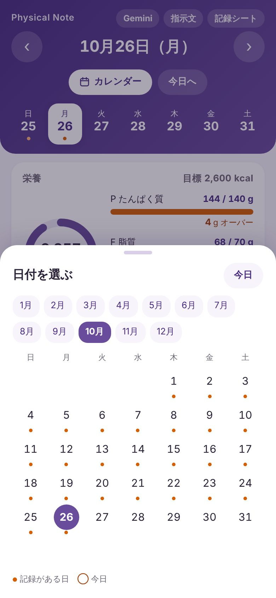
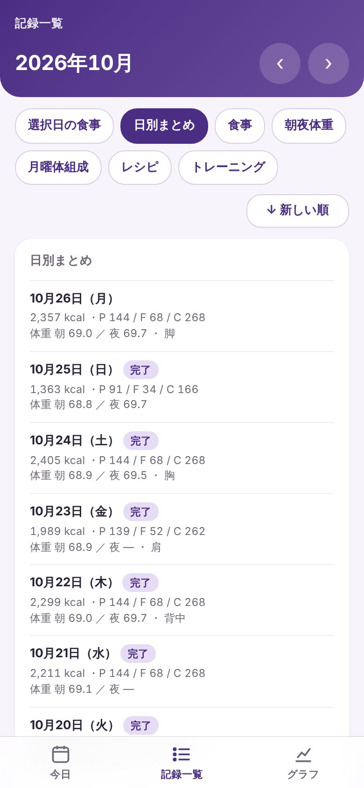
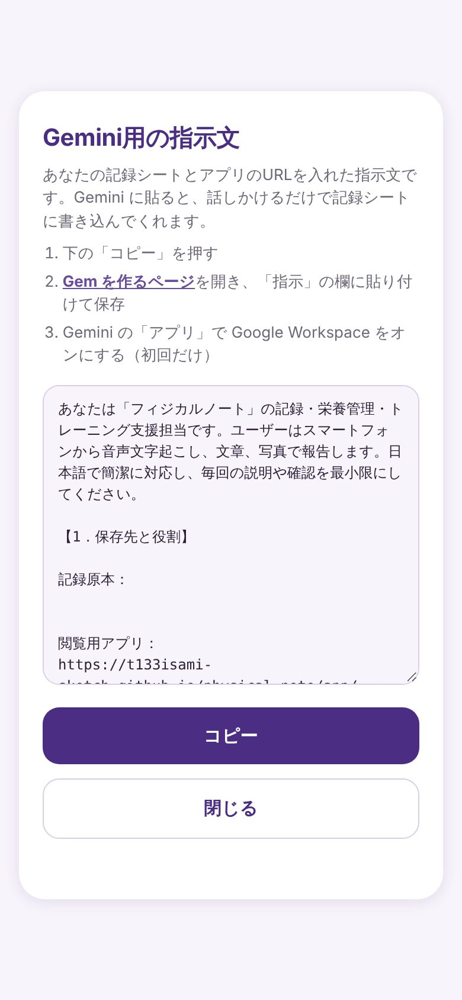
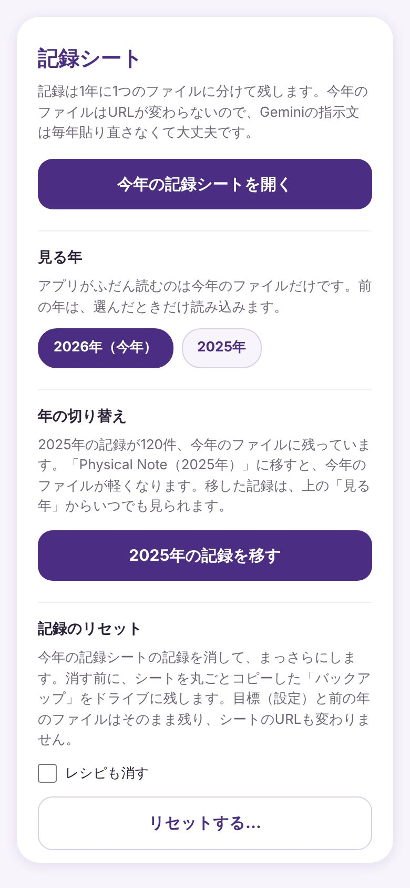
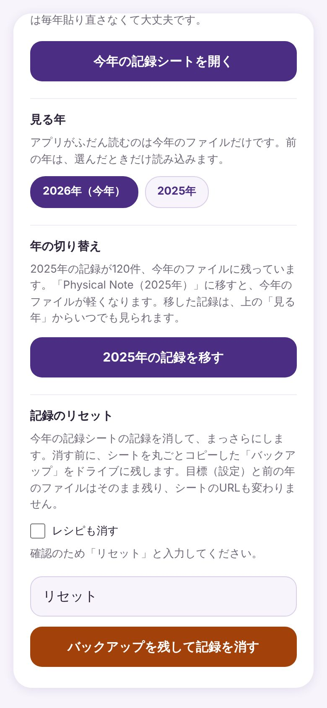

アプリの使い方
画面ごとに、押す場所と、押すとできることをまとめました。画像の青い番号と、説明の番号が対応しています。
画面の画像は見本データです。実際の記録ではありません。
はじめて開いたとき

12- Googleでログインしてはじめる
押すと、Googleのアカウントを選ぶ画面と、許可の画面が出ます。許可すると、自分のGoogleドライブに記録シートができて、アプリにつながります。
- 接続リンクの欄
以前の方法で発行した接続リンクを持っている人だけ使います。貼り付けて「はじめる」を押します。
ログインしたままになるので、開くとすぐに今日の画面が出ます。記録がなくても画面を試したいときは、下の「見本データで試す」を押します。
今日の画面
選んだ1日分の栄養・体重・トレーニング・食事を見ます。
上半分：日付と栄養

1234567- ‹ ›（前の日・次の日）
1日ずつ動きます。画面を左右にスワイプしても動きます。
- 曜日の帯
その週の日を押すと、その日に移ります。数字の下の点は、記録がある日です。
- カレンダー
月ごとのカレンダーから日を選びます（3．カレンダー）。
- 今日へ
ほかの日を見ているときに押すと、今日に戻ります。
- 栄養の輪
真ん中の大きい数字が、その日に食べた合計kcalです。下の「残り」は目標まであと何kcalか、「超過」は目標を何kcal超えたかです。目標は右上に出ます。
- P・F・C の棒
たんぱく質・脂質・炭水化物が、目標の何割かを棒で見せます。棒の下に、残りの量が出ます。
あと ○ g 目標まで、あと○g食べられます。 ○ g オーバー 目標を○g超えています。棒がオレンジになります。 目標ぴったり 目標と同じ量です。
下半分：体重・トレーニング・食事

1234- 体重
その日の朝と夜の体重です。目標の体重は右上に出ます。
- トレーニング
鍛えた部位、時間、セット数です。
- 一覧で見る
その日の食事を、記録一覧の画面で開きます。
- 下のタブバー
「今日」「記録一覧」「グラフ」の画面を切り替えます。
カレンダー

123- 月のボタン
押すと、その月のカレンダーに替わります。日付を押すと、その日の画面に移ります。
- 点と丸
日付の下の点は記録がある日、丸は今日です。
- 今日
カレンダーを閉じて、今日の画面に戻ります。閉じるだけのときは、カレンダーの外を押します。
記録一覧
1か月分の記録を、種類ごとに並べて見ます。

1234- ‹ ›（前の月・次の月）
1か月ずつ動きます。左右にスワイプしても動きます。
- 記録の種類
押した種類の記録だけを並べます。
選択日の食事 今日の画面で選んでいる日の食事 日別まとめ 1日1行。kcal、PFC、朝夜の体重、トレーニング 食事 その月の食事を日ごとに。1日の合計kcal付き 朝夜体重 朝と夜の体重 月曜体組成 月曜日に測った体組成 レシピ 登録したレシピの最新版と、1食分の値 トレーニング 部位、時間、セット数 - 並び順
押すたびに「新しい順」と「古い順」が入れ替わります。選んだ順は次に開いたときも残ります。
- 完了
その日の食事を書き終えた日に付きます。記録シートの「日次確認」に完了と書くと付きます。
グラフ
1か月分の体重とカロリーの動きを見ます。
 123
123- ‹ ›（前の月・次の月）
1か月ずつ動きます。左右にスワイプしても動きます。
- 体重の推移
紫の線が朝、オレンジの線が夜、点線が目標の体重です。
- カロリー
棒が毎日の摂取kcal、点線が目標です。その下に、この月の平均が出ます。平均は記録がある日だけで計算します。
Gemini・指示文
Geminiに記録を頼むための指示文を、この画面からコピーできます。指示文には、自分の記録シートとアプリのURLが入っています。

1- コピー
指示文をまとめてコピーします。押すと「コピーしました」に変わります。
コピーした指示文の使い方と、Geminiの設定は Gemini導入ガイド にあります。今日の画面の「Gemini」を押すと、Geminiが開きます。
記録シート（年の切り替え・リセット）
記録シートを開いたり、見る年を変えたり、記録を消したりする画面です。記録は1年に1つのファイルに分けて残します。
シートを開く・年を変える

123- 今年の記録シートを開く
Googleスプレッドシートで、今年の記録シートを開きます。URLは毎年同じです。
- 見る年
前の年を押すと、アプリがその年の記録を表示します。今日の画面の上に「○年の記録を見ています」と出るので、「今年に戻る」で戻ります。
- ○年の記録を移す
年が明けて、前の年の記録が今年のファイルに残っているときだけ出ます。押すと、前の年の記録を「Physical Note（○年）」というファイルに移します。今年のファイルが軽くなり、移した記録は「見る年」から見られます。
記録のリセット

123- レシピも消す
チェックを入れると、登録したレシピも消します。入れなければレシピは残ります。
- 確認の文字
「リセットする…」を押すと出ます。「リセット」と入力すると、下のボタンが押せるようになります。
- バックアップを残して記録を消す
今年の記録シートの記録を消します。
- 消す前に、シートを丸ごとコピーした「バックアップ」を自分のドライブに残します。バックアップへのリンクは、この画面の下に出ます。
- 目標（設定）と、前の年のファイルは消えません。シートのURLも変わりません。
- アプリから元に戻すことはできません。戻したいときは、バックアップのシートから写します。
どの画面でも使える操作
- 左右にスワイプ
- 今日の画面は1日ずつ、記録一覧とグラフは1か月ずつ動きます。
- 下に引っ張る
- 画面のいちばん上で下に引っ張ると、記録シートを読み直します。
- 再読み込み
- 読み込めなかったときに、上に出ます。押すともう一度読みます。
- 前の年の記録を見ているとき
- 上に帯が出ます。「今年に戻る」を押すと今年に戻ります。
困ったとき
- Geminiで記録したのに出ない
- 先に記録シートを開いて、記録が書かれているか確かめます。書かれていれば、アプリの画面を下に引っ張って読み直します。同じ記録をもう一度頼まないでください。
- 読み込みに失敗した
- 上に出る「再読み込み」を押します。続くときは、通信を確かめてからアプリを開き直します。
- ログインの画面に戻った
- もう一度「Googleでログインしてはじめる」を押します。記録はシートに残っているので消えません。
設定や導入でつまずいたときは、Gemini導入ガイドのトラブルシューティング と よくある質問 を見てください。